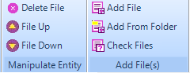
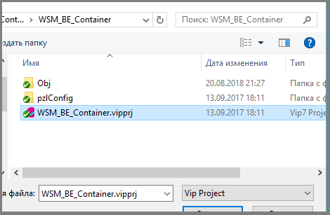

Copyright (c) Prolog Developemnt Center SPb
WorkSpace Manager
Version 2.0Adding and deleting files
The operations of adding and deleting files are performed using the Add File (s) and Manipulate Entity sections.

Add file
Files in the group can be added only those that have extensions registered in the properties of the workspace.
To add a file to a group:
- Select the target group in the workspace tree. If grouping is not
performed, the root of the tree is selected.
- In the File Editing section, invoke the Add File operation.
- In the dialog that appears, select the directory and file extension.
 - Close the dialog with the Open button or cancel the operation.
- If a file has been selected, the added file will appear in the file list of the workspace.
Batch file upload
Adding list of files from the selected directory is performed using the Add From Folder icon.
This
invokes a dialog to select a directory. From the selected directory,
all files with extensions registered in the current workspace are added
to the selected group. Only files whose extensions are selected using
the filter will be visible.
Delete file
To delete a file:
- Mark the file and in the control panel activate the Delete File button.
- Confirm the deletion of the file if the operation was not caused by mistake.
The selected file can also be deleted with the keyboard Delete key.
To delete a group of files, select the list of files and use either the Delete File icon or the keyboard Delete button.
Note: deleting files from a Folder node is not performed (as opposed to a group), deleted files are only marked with their (selected) color.
Check for the existence of files
If a file is included in the list of workspace files, but it is not physically present, WSM detects this when:
- loading workspace file data;
- when performing operations on files;
- when using the Check Files icon.
In the latter case, the physical existence of the files is checked for the selected node (and all its subnodes).
The current version of WSM does not check for the existence of files continuously.